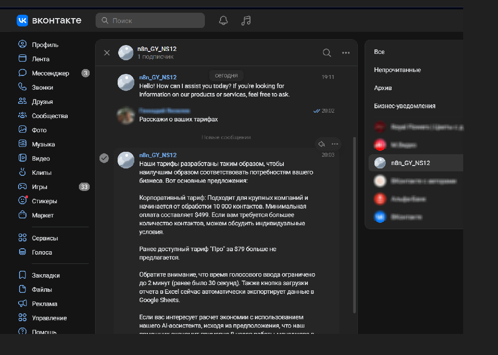

Яковлев Геннадий
Настраиваю no-code-автоматизации на n8n, экономлю рабочие часы, исключаю потери заявок
Почта: ggyakovlev@gmail.com
Телефон: +7 (921) 163-72-14
TG: @ggyakovlev
MAX: 171264069
Проект 1: Чат-бот "SalesBot Pro" с AI и базой знаний для VK
Мгновенный экспертный AI-ответ на пользовательские обращения при продаже “SalesBot Pro” в группе VK-сообщества
- Решается проблема задержки ответоа (особенно при обращениях в нерабочие часы/выходные дни)
- устраняются ошибки человеческого фактора (в частности, из-за версионности предоставляемого продукта и несвоевременного знакомства менеджеров с обновлениями базы знаний)
- обращения пользователей больше не теряются и не остаются без ответа
Разработанное решение автоматизации реализует следующую логику:
- потенциальный клиент пишет в VK-сообществе произвольное обращение
- программное решение отлавливает это событие и формулирует AI-ответ (с учетом экспертной базы знаний)
- в чате VK-сообщества появляется AI-ответ на клиентское обращение
Внедрение позволило
- в течение 1 минуты генерировать в чате VK-сообщества релевантный ответ на все пользовательские обращения
- полностью снять проблему длительной задержки с ответами и потери пользовательских обращений
- устранить проблему неактуальности и версионности обсуждаемого с клиентами функционала.
- решить проблему масштабирования позиции менеджера по продажам
Скриншот работы проекта
